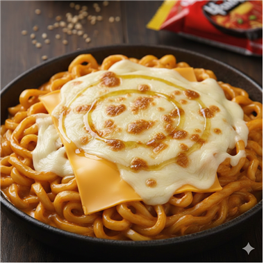
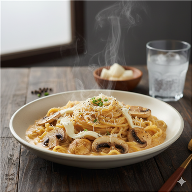
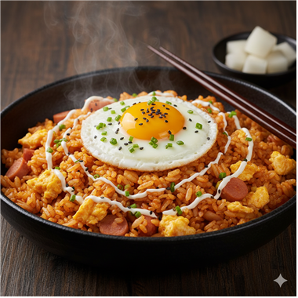
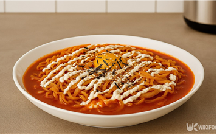
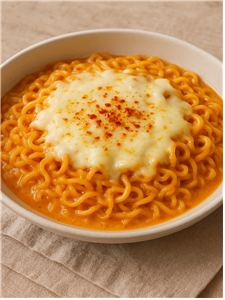

🧀 크리미한 불닭 레시피

두 주먹의 모짜렐라와 체다 치즈로 불맛에 고소함을 더하고, 참기름으로 한국적인 풍미를 살린 래퍼 이영지표 불닭 레시피.

버터에 구운 양송이의 풍미와 우유 크림으로 매콤함을 부드럽게 감싼 고급스러운 퓨전 불닭 레시피.

고슬하게 볶아준 후 까르보 액상+분말스프로 코팅하면 미쳤다… 크리미 불닭 볶음밥 완성!

부순 면과 밥, 우유로 끓여 꾸덕한 식감을 살리고, 파슬리로 마무리해 든든함과 부드러움을 모두 잡은 퓨전 리조또 레시피.

볶은 양파의 감칠맛과 체다 치즈로 깊이를 더하고, 달걀 노른자와 마요네즈로 극강의 부드러움을 완성한 특제 불닭 레시피.

버터 마늘 향과 생크림의 부드러움에 모차렐라 치즈를 더해 풍미를 끌어올린 불닭 파스타 레시피.